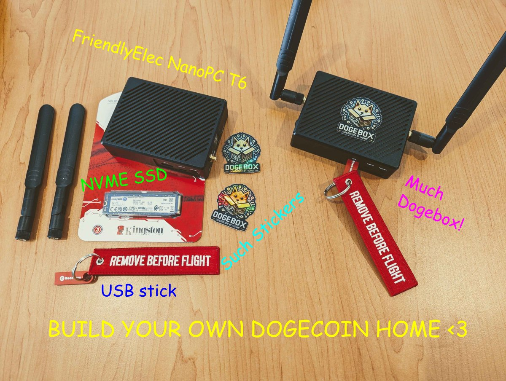

FriendlyElec NanoPC-T6
Beta release of the Dogebox OS built specifically for the FriendlyElec NanoPC-T6.

Things to note / What does not work
These things will all be fixed in a following release. This release is for tinkerers that are happy to re-flash a couple of times before a stable T6 release.
- The T6 bootloader only supports booting from microSD cards that are 32GB and smaller (SDHC, not SDXC)
- Ethernet is required to be plugged in at first initial boot.
- The OS still has a hardcoded username and password:
shibeandsuchpass. Please do not deploy your box on any unsecured network, as anyone may be able to login to your T6. This will be rectified in the next release with proper SSH key management. - WiFi configuration during initial setup is currently not supported.
Download images
Head over to https://github.com/dogeorg/dogebox/releases and download the latest dogebox-v0.x.x-beta-T6.img.gz file.
Decompress the downloaded file
The Image file is compressed with gzip to save on bandwidth. This compressed file, however, must be decompressed to be flashed to the microSD card in order to be able to boot from it, when plugged into the dogebox hardware.
How to get the image to the microSD card
The file you've downloaded is an filesystem image file. This means you have to copy the data over to the microSD card in a specific manner to make sure the data is able to be read when the machine boots.
To do this we recommend using a image flashing tool such as Balena Etcher or Rufus
How to flash microSD using Balena Etcher
- Open
Balena Etcher - Click
Select iamgeand navigate to the location of your downloaded and decompressed.img - Click
Select Driveand choose the microSD card - Click
Flashand wait for the flashing process to finish
How to flash microSD using Rufus
You can easly flash using the OpenSource Rufus Tool that you can get the latest version here for your operating system: https://github.com/pbatard/rufus/releases
- Open
Rufus - On
Deviceselect your microSD card - Click on
Selectand Choose the file you downloaded and decompressed.img - Click on
Startand wait a few minutes to finish
How to flash microSD using dd if=
- Download the T6
.img.gzfile attached to the release. - Uncompress the image so you get the raw
.imgfile. On windows you may need to download 7-Zip to uncompress the image. - On Linux & MacOS, use
dd if=to write the file to the raw microSD device. - On Windows, use a raw image disk writer UI. There are multiple available, e.g. Rufus.
How to Setup
With a monitor and keyboard available
- Insert the microSD card with image flashed.
- Ensure you have an ethernet cable plugged into your T6 box.
- Plug in a HDMI screen, make sure it's plugged into
HDMI1. - Plug in a keyboard.
- Plug power in.
- Wait until the box finishes booting, this could take anywhere from 2 to 10 minutes.
- Once finished, login with the username
shibeand the passwordsuchpass. - Enter command
ip addrand take note of your IP address.- Ignore the
lo: <LOOPBACK>section, look for another one. - Look for a line that starts with
inetfollowed by your IP address, in this example192.168.1.5. - See the screenshot below.
- Ignore the
- In a web browser, visit
http://your_ip_address:8080to start configuring your dogebox.- In this example, it would be
http://192.168.1.5:8080but your IP address will be different. - This will load the DogeBox Setup page.
- In this example, it would be
Without a monitor and keyboard available
- Insert the microSD card with image flashed.
- Ensure you have an ethernet cable plugged into your T6 box.
- Plug power in.
- Wait until the box finishes booting, this could take anywhere from 2 to 10 minutes.
- In a web browser, visit
https://dogebox.local:8080to start configuring your dogebox.- This will load the DogeBox Setup page.

Restart your Dogebox
If you choose to install DogeBox OS on the internal eMMC storage (recommended), the setup page will ask you to restart your DogeBox.
- Go back to the hardware T6 keyboard, and enter command
sudo shutdown -h nowto shut down cleanly. - This also works if you want to shut down your DogeBox at any time (you may have to log in first)
- It's a good idea to do this every time you want to shut down the DogeBox, otherwise pulling the plug risks corrupting the eMMC storage or SD card, and you might have to wipe your DogeBox and start over (often it will recover, but not always)
Shut Down your Dogebox
Descibed above under Restart your Dogebox